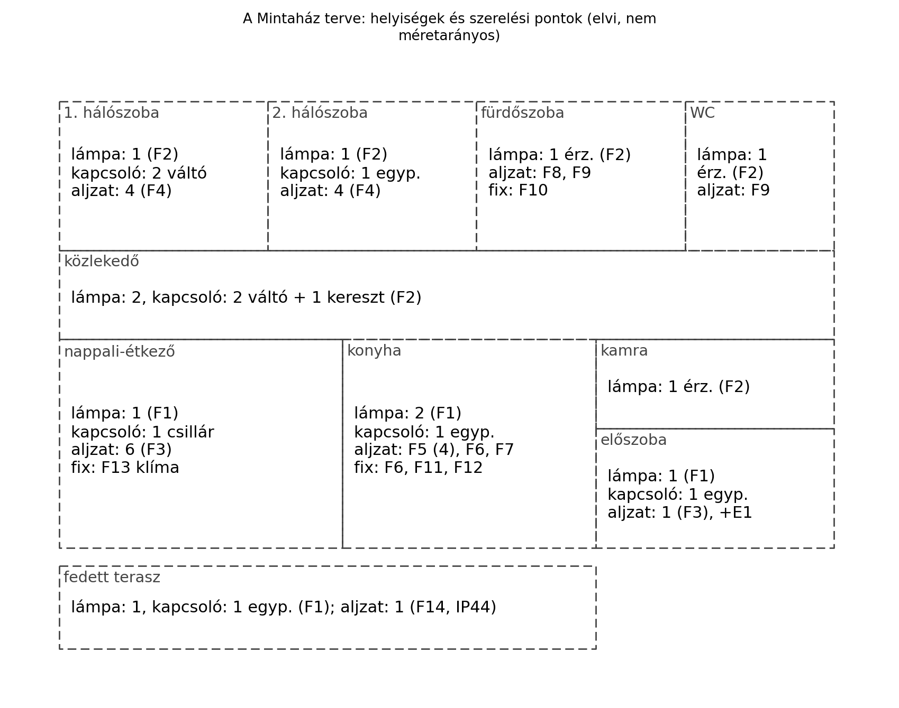

![Három szobás lakás elosztójának egyvonalas rajza (kidolgozott példa) - Egyfázisú (1~ 230 V) betáplálás; Q1 C32 kétpólusú főmegszakító (főkapcsoló), F0 túlfeszültség-levezető (2. típus, a PE felé), Q2 és Q3 40 A / 30 mA áram-védőkapcsoló; Q2 alatt F1–F2, Q3 alatt F3–F6. A ferde vonások a vezetők számát mutatják (2 = L és N); a PE minden körben fut, külön PE-sínre kötve; az N a FI-n áthalad, a két FI utáni N nem köthető össze. Tanulási példa, a védelmi értékek és keresztmetszetek a tervező méretezése szerint (ellenőrizendő: MSZ HD 60364-4-41, -5-534).](assets/ve044-diagram-1.png)
A kapcsolódó elmélet: tankönyv, 12.3 alfejezet.
Példa (1). Egy lakás nappalijának valós mérete: . A terv 1:50 méretarányú. Mekkora a helyiség rajzi mérete? Visszafelé: a rajzon a konyha hossza . Mekkora a valós hossza?
Számítás. A rajzi méretek:
Visszafelé: ha a rajzon a konyha hosszát -nek mérjük, a valóságos hossz:
Ellenőrzés: ha a terven méretvonal is szerepel (4,90), a két érték egyezik – ha nem, a rajz nem méretarányos (pl. fénymásolat kicsinyítése), és csak a méretszámnak hihetünk (méretszám > lemért hossz). A tervolvasásnál mindig ellenőrizzük a méretarányt a berajzolt méretvonallal is.
Példa (2). Rajzoljuk fel egy 3 szobás lakás elosztójának egyvonalas rajzát. Az áramkörök és védelmek:
A szöveges feldolgozás után a kapcsolási rajzlapon a következő kell: betáplálás, Q1 főmegszakító, Q2 és Q3 30 mA, majd a hat kismegszakító (F1–F2 a Q2 alatt, F3–F6 a Q3 alatt) és a fogyasztói csatlakozások. A gyakorlatban az áramköröket több áram-védőkapcsoló között osztjuk meg, hogy egy hiba vagy szivárgás ne sötétítse el az egész lakást, és ne kapcsolja le a hűtőt és a világítást egyszerre (ellenőrizendő: MSZ HD 60364-1); a fenti egyszerűsített egyvonalas rajz külön példa: oktatási célból egyetlen Q2-t és csak az F1, F2 kört mutatja. Az áramköri rajzon az egyes fogyasztókat téglalappal vagy körrel jelöljük.
A kész egyvonalas rajz:
Ábraolvasás. Balról jobbra az energia útját követed: a betáplálás (L, N; a két ferde vonás a két áramvezető vezetőt jelzi) a Q1 C32-es kétpólusú főmegszakítón át jut a gyűjtővonalra; közvetlenül a Q1 után ágazik le az F0 túlfeszültség-levezető a PE felé, még a FI-k előtt (lásd a gyakorlati útmutató 2. lépését). A gyűjtővonalról két ág indul: a felső a Q2 áram-védőkapcsolón át az F1 (B10, világítás) és az F2 (B16, nappali és háló aljzatai) kismegszakítót, az alsó a Q3-on át az F3–F6 (B16) köröket táplálja. Minden végáramkör mellett ott a fogyasztó és a kábel típusa, így a rajz és az alábbi áramkörlista soronként összevethető. A PE-t az egyvonalas rajz nem vezeti végig, de minden körben fut (a kábeltípus 3 eres: L, N, PE), és külön PE-sínre kötjük; az N a FI-n áthalad, ezért a két FI kimenő N-jét nem szabad összekötni (különben a FI-k hamisan oldanak). Ellenőrizd a rajzon: ha a Q3 kiold, mely körök maradnak feszültség alatt? (F1 és F2: a világítás és a nappali/háló aljzatai.) A háromfázisú, a Mintaház elosztójához hasonló változatot a Lakás- és épületelosztó felépítése (tankönyv, 17.2) alfejezet mutatja.
A szerelői gyakorlatban minden egyvonalas rajzhoz tartozik egy áramkörlista:
| Jel | Védelmi eszköz | Fogyasztó | Vezeték (példa) |
|---|---|---|---|
| F1 | B10 | Világítás | NYM-J 3×1,5 mm² |
| F2 | B16 | Aljzatok nappali, háló | NYM-J 3×2,5 mm² |
| F3 | B16 | Konyhai aljzatok | NYM-J 3×2,5 mm² |
| F4 | B16 | Hűtőgép | NYM-J 3×2,5 mm² |
| F5 | B16 | Mosógép | NYM-J 3×2,5 mm² |
| F6 | B16 | Bojler | NYM-J 3×2,5 mm² |
A pontos keresztmetszetet és védelmi értékeket a tervező méretezi; a táblázat csak példa.
A Mintaház (tankönyv) földszintes családi ház: külső befoglaló mérete 12 m × 10 m, hasznos alapterülete 96 m². Itt egyetlen objektumon követed végig a láncot: csatlakozás → mérőhely → fővezeték → lakáselosztó → áramkörök → szerelési pontok az alaprajzon. Minden érték tanulási példa (ellenőrizendő: MSZ HD 60364, a hálózati engedélyes előírása, tervezői méretezés).
1. lap – csatlakozás és mérőhely. TN-C-S rendszer, háromfázisú, 3×32 A-es csatlakozás. A telekhatári mérőhelyen az F01 főbiztosító (3×32 A gG) és a P1 kétirányú mérő van; a PEN a mérőhelyen válik szét. A fővezeték 5×10 mm² Cu, 12 m (lásd Csatlakozás a közcélú hálózathoz, mérőhely (tankönyv, 17.1)).
2. lap – elosztó. A +E1 lakáselosztóban Q1 4P 40 A főkapcsoló, F0 túlfeszültség-levezető, a Q2 és a Q3 FI (40 A / 30 mA) külön N-sínnel, F1–F14 körök, valamint az FI nélküli F15 (kerti műhely) és F16 (napelem-inverter) leágazás. Az egyvonalas áttekintő rajz a Mintaház (tankönyv) függelékben, a teljes többvonalas rajz a Lakás- és épületelosztó felépítése (tankönyv, 17.2) alfejezetben van; az alaprajz és a lista ugyanezeket a jeleket használja.
3. lap – alaprajz. A helyiségalapterületek (példaadat): nappali-étkező 30 m², konyha 14 m², 1. hálószoba 14 m², 2. hálószoba 12,25 m², fürdőszoba 7,5 m², előszoba 6,25 m², közlekedő 7,2 m², kamra 3 m², WC 1,8 m², összesen 96 m²; a fedett terasz ezen felül van.

Összesen 12 lámpahely, 10 kapcsolóhely, 25 aljzathely és 5 fix bekötés, vagyis 52 szerelési pont (a helyiségenkénti adatlap: Felmérés, tervértelmezés és szerelési technológia (tankönyv, 15.1)). Valódi kiviteli terven minden pontot a saját rajzjele és méretezett helye mutat, a nyomvonalak mellett pedig az áramkörjel és a vezetékszám-vonás áll. Ugyanebből az objektumból készül az anyagkigyűjtés és a munkaidő-becslés (Anyag- és eszközkiválasztás, árajánlat (tankönyv, 15.2)), az árajánlat vállalkozói oldalát pedig a Vállalkozási formák, gazdálkodás, árajánlat és számla (tankönyv, 43.2) alfejezet tárgyalja.
4. lap – áramkörjegyzék.
| Kör | Védelem | Fázis | FI | Kábel | Fogyasztó | (W) |
|---|---|---|---|---|---|---|
| F1 | B10 | L1 | Q2 | 3×1,5 | világítás 1 | 600 |
| F2 | B10 | L2 | Q3 | 3×1,5 | világítás 2 | 500 |
| F3 | B16 | L3 | Q2 | 3×2,5 | aljzat: nappali, előszoba | 2 000 |
| F4 | B16 | L1 | Q3 | 3×2,5 | aljzat: hálók | 1 500 |
| F5 | B16 | L2 | Q2 | 3×2,5 | konyhai pult | 2 500 |
| F6 | B16 | L3 | Q3 | 3×2,5 | hűtő, páraelszívó | 450 |
| F7 | B16 | L3 | Q2 | 3×2,5 | mosogatógép | 2 000 |
| F8 | B16 | L1 | Q3 | 3×2,5 | mosógép | 2 200 |
| F9 | B16 | L2 | Q2 | 3×2,5 | fürdő, WC, törölközőszárító | 2 000 |
| F10 | B16 | L3 | Q3 | 3×2,5 | bojler | 2 000 |
| F11 | B16 | L1 | Q2 | 3×2,5 | sütő | 3 500 |
| F12 | B16 3P | L1–L3 | Q3 | 5×2,5 | főzőlap | 7 200 |
| F13 | B16 | L2 | Q2 | 3×2,5 | klíma | 900 |
| F14 | B16 | L2 | Q3 | 3×2,5 | kültéri aljzat | 1 000 |
| F15 | C25 3P | L1–L3 | – | NYY-J 5×6 | kerti műhely | – |
| F16 | B16 3P | L1–L3 | – | 5×2,5 | napelem-inverter | – |
A 14 fogyasztói kör beépített teljesítménye fázisonként L1 10,2 kW, L2 9,3 kW, L3 8,85 kW (a főzőlap fázisonként 2,4 kW), összesen 28,35 kW. A kiosztás közel egyenletes; a valós egyidejű terhelés az egyidejűség miatt jóval kisebb.
Kérdések a tervhez.
Megoldások. 1. Az F8 (B16), a Q3 alatt, L1 fázison. 2. Háromfázisú (3P) kismegszakító; az 5 ér: L1, L2, L3, N, PE. 3. A Q3 csoport (F2, F4, F6, F8, F10, F12, F14), továbbá az FI nélküli F15 és F16 leágazás. 4. 10,2 / 9,3 / 8,85 kW; . 5. Hogy egy FI-kioldás ne állítsa le egyszerre a konyha pultját és a hűtőt (rendelkezésre állás); a két kör fázisa is eltér (L2, L3). 6. Három aktív ér (L, ↑1, ↑2); védőeret tartalmazó kábellel 4 eres (a PE a dobozban köthető vagy tartalékként marad).
Cél: adott áramkörlista alapján készítsd el a lakáselosztó egyvonalas rajzát.
Eszközök, anyagok: papír, ceruza, vonalzó, rajzsablon vagy számítógépes rajzprogram; az áramkörlista és az elosztó típusa.
Biztonsági korlát. Ez a feladat rajzolási feladat, de ha élő, hálózati feszültségű elosztóról készítesz rajzot, a munkát csak feszültségmentesítés után, jogosult személy felügyeletével végezheted. A feladatok tanműhelyi környezetre vagy oktatói felügyeletre vonatkoznak; hálózati feszültségen önállóan ne dolgozz.
Az öt biztonsági szabály akkor is érvényes, ha a rajz kedvéért meg kell nézned egy meglévő elosztót: 1. lekapcsolás; 2. visszakapcsolás elleni biztosítás; 3. feszültségmentesség ellenőrzése; 4. földelés és rövidre zárás; 5. szomszédos feszültség alatti részek lefedése.
Lépések:
L1 fázis (és ha háromfázisú,
akkor L1-L2-L3), nulla-, védővezető.Q1,
Q2, F1…), névleges árama (B16,
C32) és a fogyasztói kör megnevezése.Ellenőrző pontok:
Dokumentálás: a rajzon tüntesd fel a rajzszámot, a dátumot, a tervező nevét és a változatot. A kész rajzot az elosztó ajtajában is elhelyezik.
1. feladat (A). Számítsd át 1:100 méretarányra a nappali méretét: valós hossz 5,4 m, szélesség 4,2 m. Mekkora lesz a rajzi méret centiméterben?
2. feladat (A). Sorold fel, milyen villamos tervjeleket találsz egy lakás alaprajzán, és mondd el, miért fontos a jelkulcs.
3. feladat (B). Rajzold fel a lakáselosztó egyvonalas rajzát: Q1 C32 főmegszakító, Q2 30 mA, F1 B10 világítás, F2 B16 aljzatok nappali, F3 B16 hűtő, F4 B16 mosógép. Jelöld a fogyasztói csatlakozásokat.
4. feladat (B). Egy konyha valós mérete 3,8 m × 2,9 m. A terv 1:50 méretarányú. Mekkora a rajzi méret? Ha a rajzon a konyhapult 6,4 cm hosszú, mekkora a valós hossz?
5. feladat (C). Adott elektromos terv: a fürdőszobai aljzatoknál FI-védelem nincs, csak B16-os megszakító védi az áramkört. A terven nincs EPH a fürdőszobában. Milyen hibák vannak? Javítsd ki az egyvonalas rajzot: FI-relé beépítése és EPH jelölése.
6. feladat (D). Hibakeresés: az elosztó egyvonalas rajza szerint a bojler a világítási körre van kötve (B10), a konyha aljzatai FI nélkül, a mosógép védővezetője nincs bekötve. Mi a probléma? Módosítsd a rajzot: a bojler kerüljön külön B16-os körre, a konyha és a mosógép FI-védelem alá, a védővezetőt jelöld be.
A feladatok a fejezet eleji lakásterv-ábrára vonatkoznak.
7. feladat (A). Hány aljzat tartozik az F2 körhöz?
8. feladat (A). Hány mennyezeti lámpa és hány kapcsoló van a terven, a kapcsolók fajtája szerint?
9. feladat (A). Melyik áramkör táplálja a fürdőszobai aljzatot, és miért áll mellette az IP44 jelölés?
10. feladat (B). Az F2 nyomvonalának alaprajzi hossza a tervadatok szerint . Mennyi ez összesen, és milyen hosszú az 1:50-es tervlapon?
11. feladat (B). Becsüld meg az F2 kör kábelhosszát: alaprajzi nyomvonal, ehhez aljzatonként 0,6 m (függőleges szakasz és bekötési ráhagyás) és az elosztónál 1,0 m (tanulási ráhagyási értékek).
12. feladat (C). Az F3 konyhai aljzatkör nyomvonala . A két konyhai aljzat egy körön van. Mekkora a nyomvonal, és milyen átalakítást javasolsz, ha a konyhába még egy 2 kW-os vízforraló és egy 2 kW-os mikrohullámú sütő kerül?
1. feladat (A) megoldása.
1:100 méretarány mellett a rajzi méret a valós méret 1/100-a.
A nappali rajzi mérete 5,4 cm × 4,2 cm.
2. feladat (A) megoldása.
A tervjelek: lámpatest, kapcsoló, váltókapcsoló, keresztkapcsoló,
aljzat, elosztó, EPH, vezeték-nyomvonal. A jelkulcs azért fontos, mert a
jelek országonként és tervezőnként kissé eltérhetnek, és csak a jelkulcs
ad egyértelmű azonosítást.
3. feladat (B) megoldása.
Szövegesen: betáplálás 230 V → Q1 C32 → Q2 30 mA → majd négy
kismegszakító: F1 B10 (világítás), F2 B16 (aljzatok nappali), F3 B16
(hűtő), F4 B16 (mosógép). A Q2 után a megszakítók fáziscsatlakozásai
párhuzamosan vannak a gyűjtősínen. Rajzban a 12.3.9 kidolgozott példa
egyvonalas rajzát követi: ugyanaz a felépítés (betáplálás, Q1, FI, majd
a kismegszakítók függőleges elosztóvonalról, jobb oldalt a fogyasztó és
a kábel), csak itt egyetlen FI (Q2) alatt négy kör van (F1–F4), és a
fogyasztói neveket külön sorok jelölik.
4. feladat (B) megoldása.
1:50 méretarány:
Ha a rajzon 6,4 cm-t mérek, a valós hossz:
5. feladat (C) megoldása.
Hibák: a fürdőszobai áramkört nem védi 30 mA-es FI-relé. A helyes
megoldás: 30 mA-es FI-relé beépítése az elosztóba, a fürdőszobai
aljzatokat a FI alá kötni. Az EPH-t a szabvány feltételei szerint kell
megítélni: a fő egyenpotenciálra hozás (fő EPH) meglétét mindenképp
ellenőrizni kell; a kiegészítő EPH akkor lehet elhagyható, ha minden
fürdőszobai áramkör 30 mA-es RCD-vel védett és a fő EPH kiépített,
egyébként a fürdőszobában kiépítendő (fémszerkezetek, víz- és
fűtésvezetékek EPH-bekötése; ellenőrizendő: MSZ HD 60364-7-701 hatályos
kiadás).
6. feladat (D) megoldása.
Problémák: a bojler B10-es világítási körön túlterhelhet; a konyha és a
mosógép FI nélkül hibavédelmileg hiányos; a mosógép védővezetője
hiányzik. Módosítás: a bojler külön B16-os áramkörre, a konyhai
aljzatkör és a mosógép 30 mA-es FI alá, a mosógép PE vezetőjét bekötni a
védővezető-gyűjtősínbe.
7. feladat (A) megoldása. Az F2 körhöz 5 aljzat tartozik (nappali és háló).
8. feladat (A) megoldása. 5 mennyezeti lámpa és 6 kapcsoló: 3 egypólusú, 1 soros (csillár-), 2 váltókapcsoló.
9. feladat (A) megoldása. Az F5 (mosógép). A fürdőszoba nedves helyiség, ezért a szerelvény védettsége legalább a helyszínhez illő, itt IP44; az aljzat helyét a zónák is meghatározzák (lásd Aljzatkörök és fogyasztói csatlakozások, nedves helyiségek (tankönyv, 16.4)).
10. feladat (B) megoldása. ; a tervlapon .
11. feladat (B) megoldása. ; 20 m-es tekercset vagy méterárut rendelsz (a tartalékot lásd Anyag- és eszközkiválasztás, árajánlat (tankönyv, 15.2)).
12. feladat (C) megoldása. . Egy B16-os kör 230 V-on legfeljebb kb. 3,7 kW-ot visz tartósan; a két új készülék együtt 4 kW, a meglévő pultfogyasztók nélkül is. Javaslat: a konyhai aljzatokat két (vagy a nagy fogyasztóknak külön) körre osztani, mindegyik 30 mA-es FI mögött, saját B16 védelemmel (ellenőrizendő: tervezői méretezés).
Példa: egy négylakásos társasház fővezetéki rajza. Az alábbi egyvonalas rajz a csatlakozási ponttól a lakáselosztókig mutatja az energia útját (szemléltető, nem méretezett adatokkal):
![Négylakásos társasház fővezetéki egyvonalas rajza (szemléltető) - Szemléltető, nem méretezett rajz: a keresztmetszetek és a névleges áramok tanulási példák (ellenőrizendő: tervezői méretezés, az elosztói engedélyes csatlakozási előírásai). F00 a csatlakozószekrény főbiztosítója, F11–F15 a mérő előtti (plombált) kismegszakítók, P1–P5 fogyasztásmérők. A főkábel TN-C (4 vezető), a PEN-szétválasztás a főelosztóban (FFK) van, utána TN-S: a felszálló és a lakásokhoz menő vezetékek 5 vezetősek (L1, L2, L3, N, PE). A ferde vonások a vezetők számát mutatják.](assets/ve044-diagram-3.png)